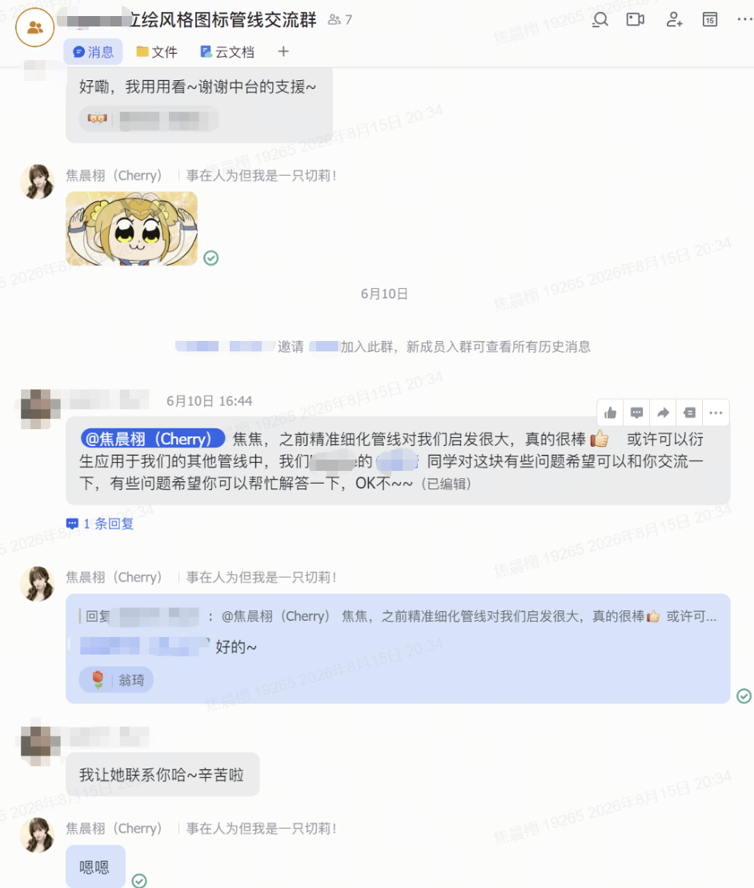
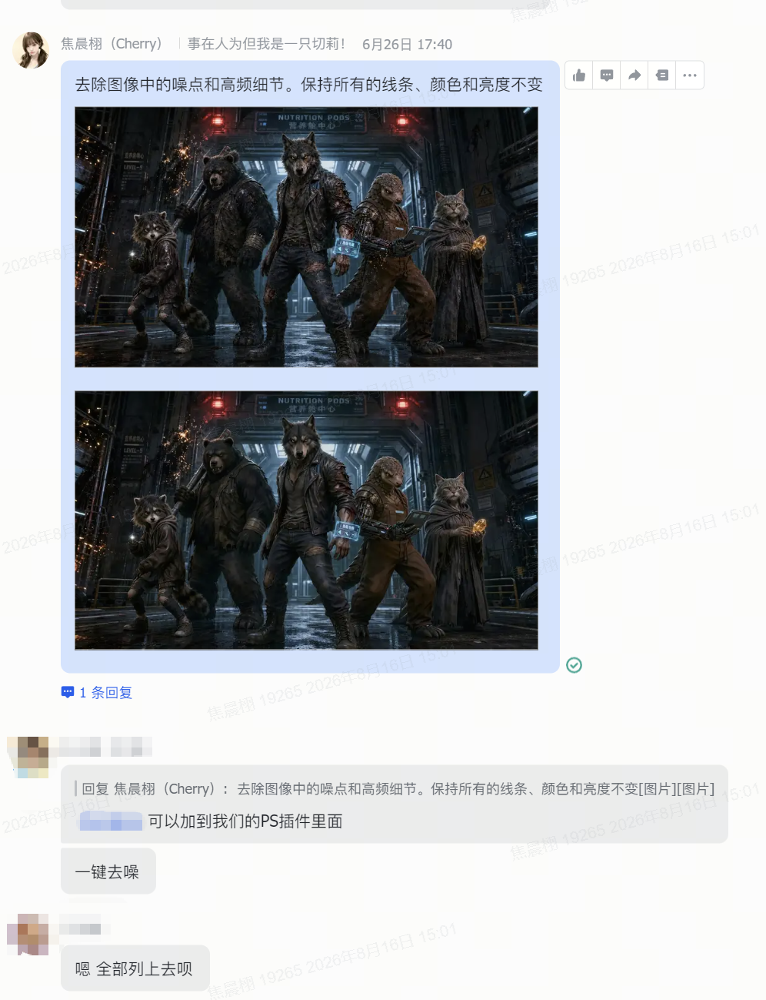
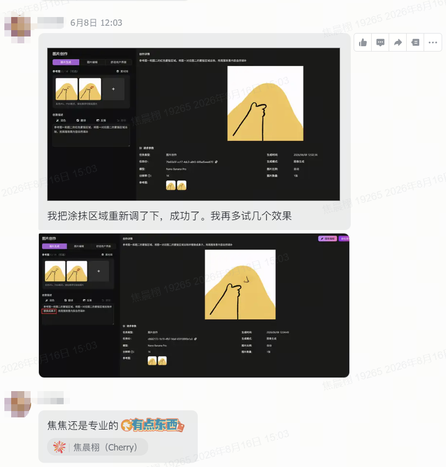
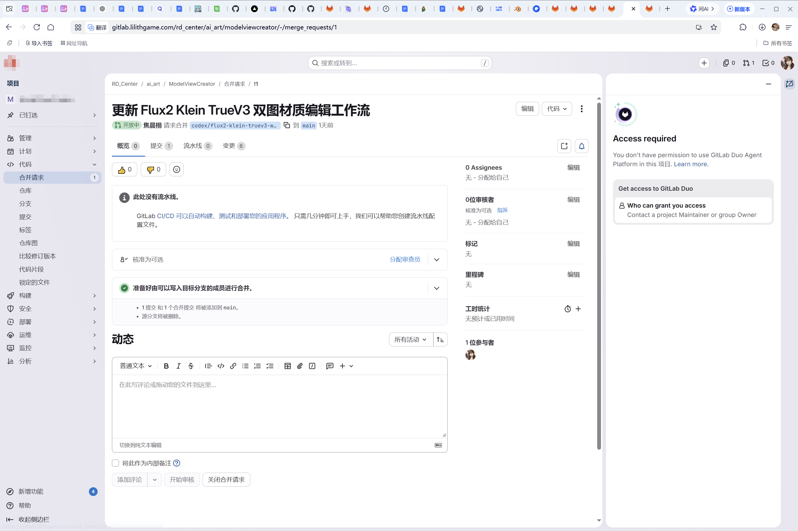
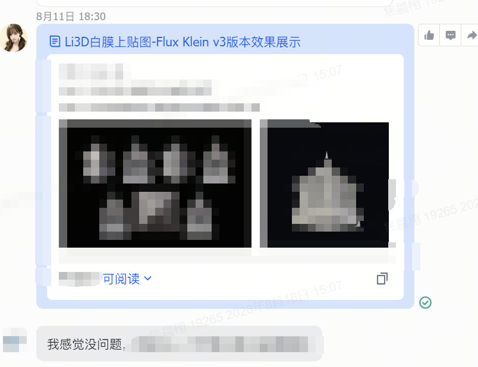
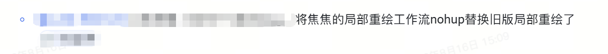
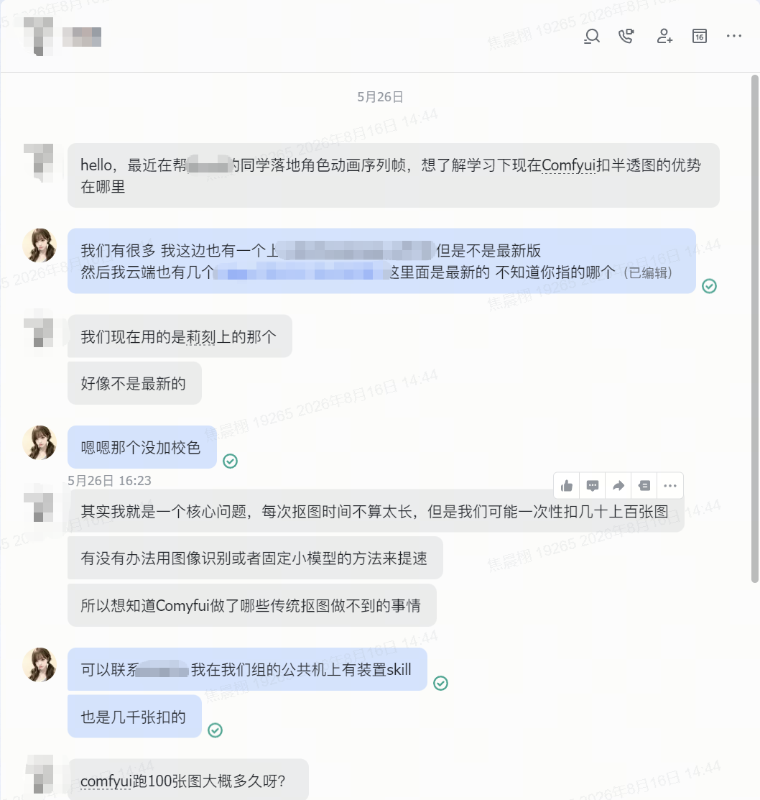
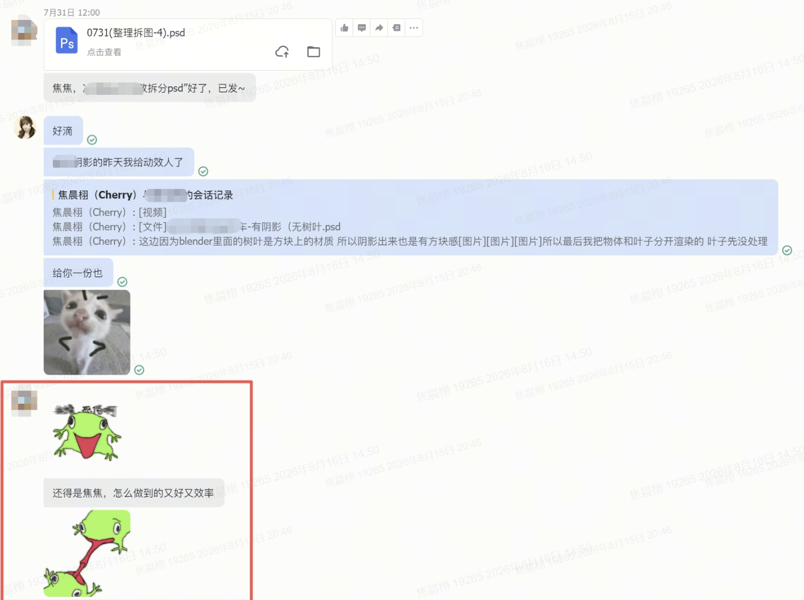

MiHoYo JD Fit / AI Art Production Workflow
把项目美术需求 做成可复用的 AI 工作流
擅长把项目美术需求拆成 LoRA 训练、ComfyUI 节点、PS-AI 功能、输出规范、筛选标准和公共平台可复用工作流。 风格标准由项目主美与美术负责人把控，我负责把需求变成能被团队调用、验证和持续迭代的生产方案。
- 综合美术（AI向）
- LoRA 训练
- ComfyUI 工作流
- PS-AI
- 软边缘抠图
- 硬边缘抠图
- Li3D 贴图绘制
Selected Role
AIGC 美术工作流搭建
视觉出身，流程落地。
从美术需求、风格适配、工作流搭建到团队复用，呈现 AI 进入项目生产的落地过程。
Positioning
我投的是“AI 进入美术生产”的位置
这个 JD 最看重的是美术基础、AI 工具经验、审美筛选、工作流搭建和协作落地。我的核心定位是 将真实项目里的模糊美术需求拆成参考、模型、节点、参数、输出规范、质量判断和复用说明。
我会把自己表述为：具备视觉设计经验、项目需求理解和 AIGC 工具化能力的综合美术（AI向）候选人。 目前主线是 LoRA、ComfyUI、PS-AI、抠图、Li3D 贴图绘制管线和阴影烘焙等已落地流程；AI+3D 流程理解与 UE5 美术表现学习作为后续延展方向，用来更好理解 AI 生成内容进入游戏美术链路后的效果验证。
Capability System
该保留的能力证据
项目需求转工作流
把项目美术需求拆成参考图、节点参数、生成批次、筛选维度和复用说明，累计上传 10+ 个项目定制工作流至公共平台。
LoRA 训练与风格适配
围绕项目风格和美术反馈训练/调试 LoRA，并将生成效果接入图标、角色、道具和风格转绘等生产场景。
PS-AI 视觉实验与功能规划
基于吉比特阶段 PS-AI 场景/角色视觉实验与前公司插件经验，验证局部重绘、AI 生图降噪、软边缘抠图和硬边缘抠图等真实美术需求方向。
软硬边缘抠图
自研软抠图与硬抠图工作流，解决毛发、半透明边缘、动画素材边缘脏和批量处理效率问题。
Blender + AI 阴影烘焙
结合 Blender 与 AI 辅助流程处理阴影、AO 和空间层次，常规需求从接收到交付基本控制在 1 天左右。
Li3D 贴图工具链
接手组内自研 3D 软件的贴图绘制管线，对标 Modddiff 类 3D AI 贴图能力，重做版本获得好评并已上线。
Selected Works
精选项目
项目定制 AIGC 管线与公共平台落地
AIGC Workflow / 2026.3 至今
对接多个项目组的 AI 美术需求，从需求拆解、参考整理、LoRA/节点选择到工作流部署，累计上传 10+ 个项目定制工作流至公共平台，覆盖图标、角色、道具、扩图、局部重绘和风格转绘等场景。
查看证据
PS-AI 场景/角色视觉实验与功能规划
Tool Direction / 2025.11-2026.3
基于吉比特阶段 PS-AI 场景/角色视觉实验、前公司 PS-AI 插件实践与现公司内部工具协作，验证 Photoshop 内接入 AIGC 工作流的生产效果；协助 PS-AI 同事做 ComfyUI 工作流参考、提示词文案与功能验收标准，并提出局部重绘、AI 生图降噪、软/硬边缘抠图等真实美术需求方向。
查看证据
Li3D 贴图绘制管线重构与上线
3D AI Tooling / 2026
接手组内自研 3D 软件的贴图绘制核心流程，对标 Modddiff 类模型上贴图能力，重构 Flux2 Klein TrueV3 双图材质编辑 ComfyUI 工作流；新方案替换旧版局部重绘流程，接入本地绘制、局部重绘连接云端 ComfyUI、贴图保存与输出链路，进入 Li3D 核心功能并上线。
查看证据
软边缘 / 硬边缘抠图工作流研发
Matting Workflow / 2026
自研软边缘抠图与硬边缘抠图工作流，支持毛发、半透明边缘和动画素材处理；软边缘抠图已稳定支持长期抠图动画需求，并获得组长高度认可。
查看证据
Blender + AI 阴影烘焙流程落地
Shadow Baking / 2026
面向项目美术的阴影与空间层次表现需求，结合 Blender 与 AI 辅助流程搭建阴影烘焙方案；常规需求从接收到完成约 1 天交付，已投入项目使用，并获得组长“超越预期”的反馈。
查看证据
LoRA 训练与项目风格适配支持
LoRA / Style Fit
围绕成熟商业项目与在研高 AI 生成占比项目进行美术需求支持，根据项目风格、参考图和反馈训练/调试 LoRA，帮助图标、角色、道具等内容快速接近目标风格。
查看证据Evidence Gateway
证据入口
公共平台 10+ 工作流
项目组反馈（已脱敏）：该反馈展示工作流/管线方案对项目组的启发和协作价值。

PS-AI 插件协作反馈
现公司 PS-AI 协作反馈（已脱敏）与吉比特阶段 PS-AI 视觉试验：早期做过场景与角色方向的 PS-AI 视觉实验，验证局部重绘、风格调整和图像生成在概念探索中的可用性；现公司阶段协助 PS-AI 同事梳理 ComfyUI 工作流参考、提示词文案经验和功能验收标准，围绕高清去噪、局部重绘 / 涂抹区域等真实美术需求，把前期插件经验转化为可落地的功能建议。


Li3D 材质编辑核心工作流替换上线
核心功能证据（已脱敏）：早期局部重绘 / 材质编辑方案未完全满足生产预期后，我接手重构 Flux2 Klein TrueV3 双图材质编辑 ComfyUI 工作流，并将新方案替换旧版局部重绘流程，最终进入 Li3D 贴图绘制核心链路。



软 / 硬边缘抠图效果
跨组咨询反馈（已脱敏）：中台其他组负责人主动咨询半透明抠图工作流，展示软边缘抠图方案的跨项目复用与方法沉淀价值。

Blender + AI 阴影烘焙
效率反馈（已脱敏）：该反馈展示阴影烘焙/素材处理需求从接收到交付的质量和效率。

LoRA 风格适配结果
展示参考图整理、训练/调试流程、生成批次对比和项目美术反馈；项目名不公开时统一以“成熟商业项目”脱敏呈现。
回到项目Portfolio Gateway